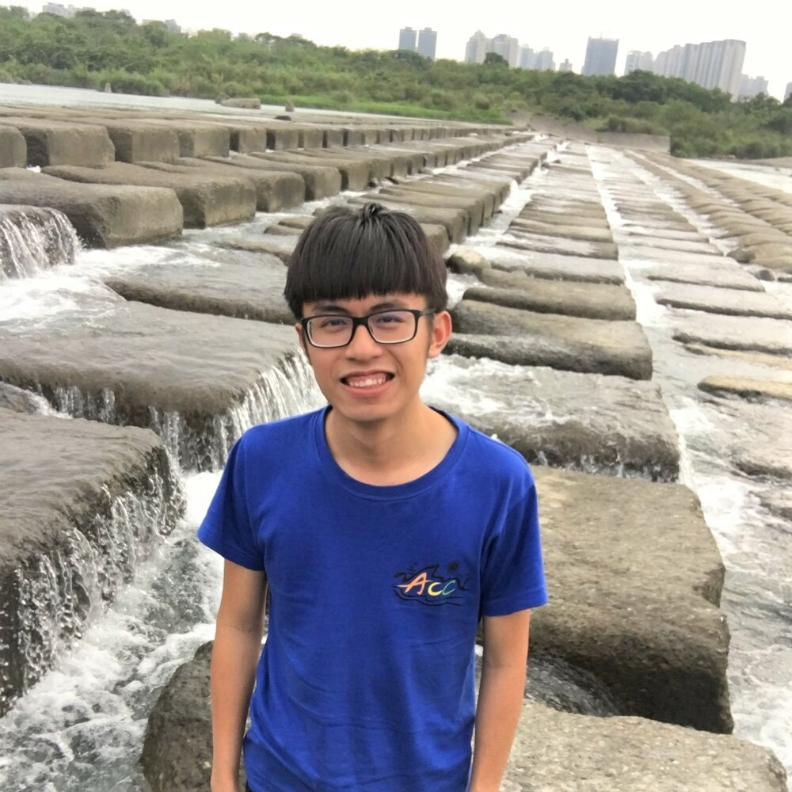

公司職員簡介
姓名 : 張富淳
職稱 : 2018原文大隊長
入社年份 : 2015-2017
特殊表現 : 可以說是護唇膏、很厲害的打鼾、大屁孩
員工表現

祈瑋
帶到大三辛苦你了~上司庫有你的時候會覺得特別熟悉，有大一時候的感動。搞不好之後研究所還要靠你罩喔哈哈畢業快樂~
琪鑒
我覺得你人真的很好，是很親切好相處的學長！之後有機會還要一起去司庫喔！米古依最愛的富唇膏哈哈哈！
魏孜旻
一起上山很多次了，富淳你就是抬耀的第三位大家長，每次上山都覺得你跟一拳根本就是那些男生的孩子王，他們都超愛你們的～總之畢業快樂拉！
洋洋
一直到了二年級當上副大隊的時候才認識你哈哈，辛苦你也謝謝你過去在原文的付出~ 希望你未來在Marvin的實驗室要好好活下去， 說不定會跟陳祈瑋一起去當你的學弟
張瑋
上了抬耀才認識你的，雖然算是比較晚，不過很喜歡跟你一起上山的氣氛，尤其是看你和吳翊銓、許筱婷一起耍屁孩。很慶幸有你們這些前輩，在抬耀 永遠不會感到被忽視甚至無聊，畢業之後一樣要快樂哦哈哈
ㄐㄩ
富淳寶寶，我們應該也是你當大隊才變熟，你真的很怪，講話又機掰機掰的，但我還是很愛您，忘記為什麼跟你一起騎去司庫ㄌ，希望以後還有機會一 起上去玩，畢業快樂，記得請我吃飯，愛心愛心